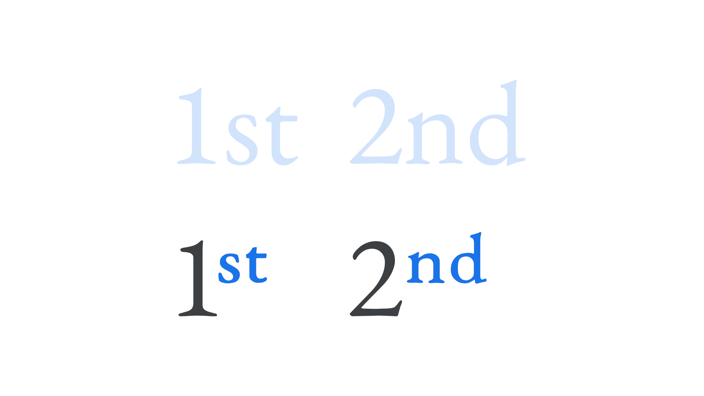

Ordinals
By Google Fonts Knowledge contributors · Google Fonts Knowledge.
Original article · Source on GitHub · CC BY-SA 4.0. Text, illustrations and existing credits reproduced from the licensed Knowledge repository. Open Shelf adapted the layout and links; these adaptations are also CC BY-SA 4.0. No endorsement implied.
Ordinals are the small letters that appear next to a numeral. English examples include the “st” in “1st” (“first”), or “nd” in “2nd” (“second”).
In English, deciding whether to use ordinals is a matter of a publisher’s house style. In French and Spanish, usage is much more common.

In most typefaces, these characters are not merely “shrunk” versions of their regular counterparts; they, like small caps, are drawn and spaced to be in proportion to the rest of the text, and can be activated by OpenType. In effect, they’re optically sized.
Note that without the ordinal glyphs present in the font, software may render them as “faux” ordinals.